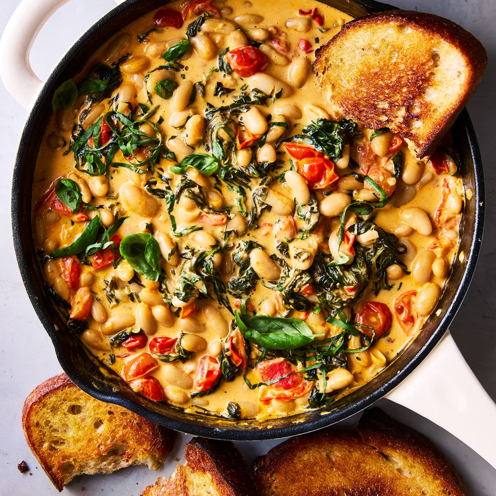

Tuscan Bean Skillet
Home

Description
This recipe is the quickest way to make someone fall in love with you.
It is effortlessly simple and makes for a meal where you can close your
eyes and imagine you are sitting eating dinner at sunset on the Italian Riviera.
The heartiness of the beans and bold tomato flavor go great with a side of toasted
sourdough!
Ingredients
- 2 tablespoons of olive oil
- 1/2 cup of oil-packed sundried tomatoes
- 2 cloves of diced garlic
- 1 can of diced fire-roasted tomatoes
- 1 white onion
- 2 cans of white cannellini beans
- 1 can of drained and chopped artichoke hearts
- 1/2 to 1 large head of chopped kale (depending on your preference)
- Spices: oregano, thyme, crushed red pepper, etc.
- A few slices of toasted sourdough
Steps
- Warm olive oil over medium heat. Add the sundried tomatoes, diced tomatoes,
garlic, and onions until soft.
- Add the cannellini beans, artichoke hearts, and seasonings. Stir and cook for 10
minutes to get the flavors flavorin'. Make sure to leave the lid on while the dish is
cooking.
- Uncover and add in generous amounts of chopped kale. Stir the dish until the kale wilts.
- After the dish is done cooking, serve with toasted sourdough.